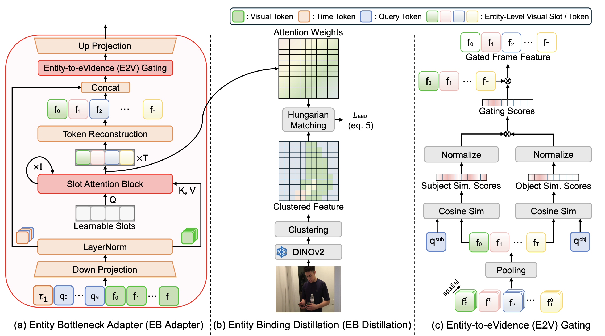
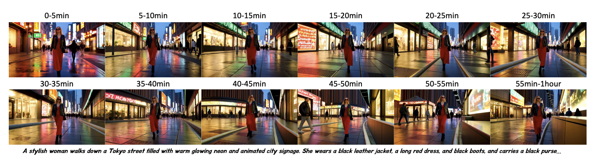
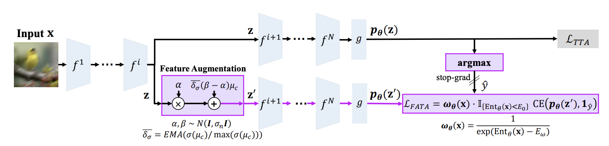
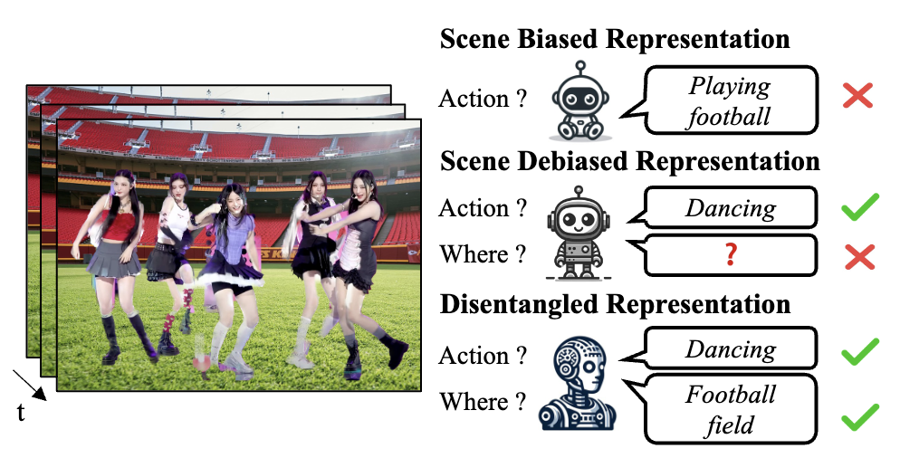
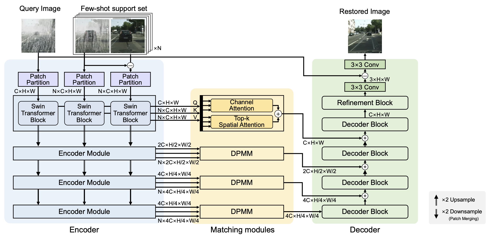
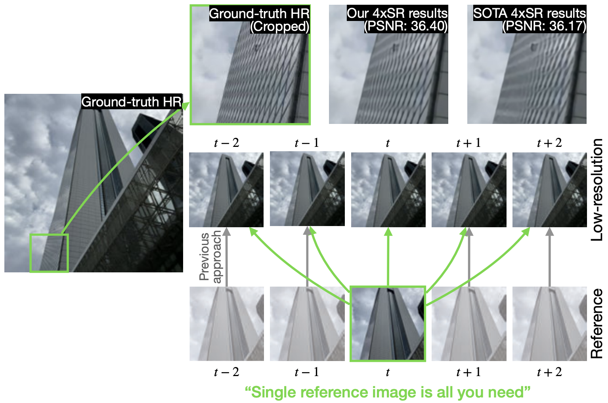

I am a second-year Ph.D. student in Computer Engineering at the University of Southern California (USC), advised by Prof. C.-C. Jay Kuo and Prof. Peter Beerel. This summer, I am a Student Researcher at Google in Cambridge, MA.
I work broadly on video generation, world models, and 3D visual perception. I am particularly interested in building systems that can synthesize long-form, temporally coherent video grounded in a deep understanding of the 3D world. I am also interested in video understanding and multimodal LLMs. Currently, I am working on novel view synthesis at Google.
 G
G
 USC
USC
- Jun. MemRoPE accepted to ECCV 2026.
- May EVIDENT preprint on cross-domain video temporal grounding released.
- May Gave an invited talk "Toward Infinite Video Generation" at eBay. Talk
- May Joined Google as a Student Researcher (PhD intern) in Cambridge, MA.
- Apr. Two papers accepted to ICMLW 2026 (Rethinking Layer Redundancy; Beyond the Mean).
- Mar. SlotVTG accepted to CVPRW 2026.
- Feb. Outstanding Poster Presentation Award at IPIU 2026. ★ Award
- Feb. MemRoPE preprint on training-free infinite video generation released.
- Dec. Perturbation-Aware Training preprint released.
- Oct. FATA accepted to WACV 2025.
- Aug. Started Ph.D. at USC.
- Aug. BESTTA accepted to ECCVW 2024 (Vision-Centric Autonomous Driving).
- Jul. DEVIAS accepted to ECCV 2024 as an Oral presentation (2.3% acceptance rate). ★ Oral
- Jul. MetaWeather accepted to ECCV 2024.
- Jun. Best Paper Award at Korea Computer Congress. ★ Award
* denotes equal contribution

Pre-Print
ECCV 2026
WACV 2025
ECCV 2024 Oral
ECCV 2024
WACV 2023- CVPR 2024, 2025, 2026
- ECCV 2026
- NeurIPS 2026
- AAAI 2025, 2026
- WACV 2025
- BMVC 2026
- IEEE TCSVT
-
"Toward Infinite Video Generation"
eBay · May 2026
- Teaching Assistant · CS206 Data Structure, KAIST Fall 2022
- Teaching Assistant · CS330 Operating System, KAIST Spring 2022